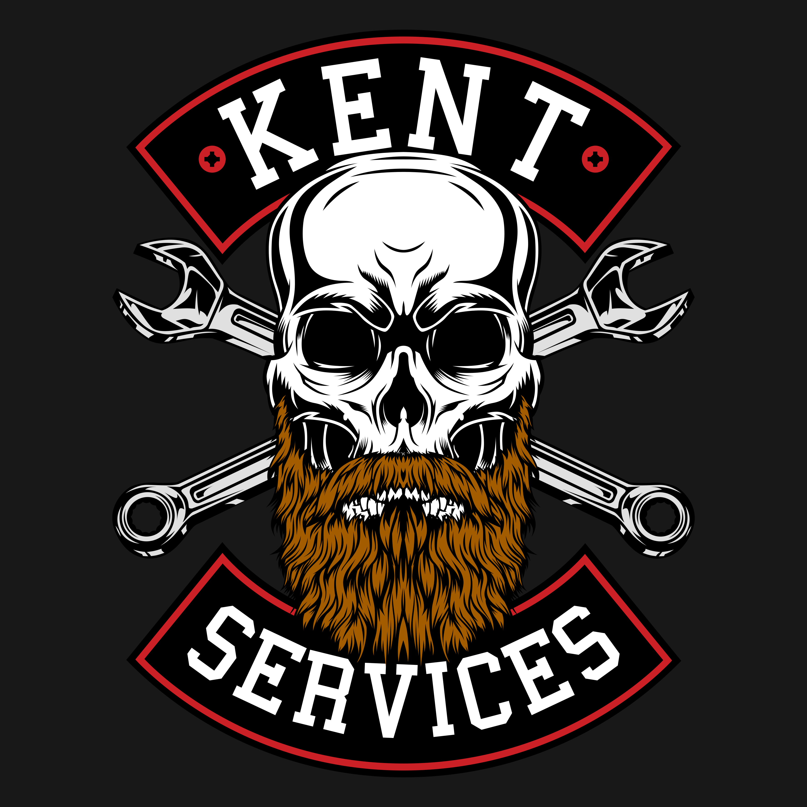

Whether it's a dead golf cart battery, squishy brakes, a stalled tractor, or a generator that won't start, we bring the shop right to your driveway, workplace parking lot, or off-road jobsite. No tow needed, we've got you covered.
From a check engine light to a broken-down forklift, Kent Services handles it at your location. Pick a category below to see the details.
Check engine lights, no-starts, wiring, alternators and starters. We find the real problem and fix it right.
Learn moreBrake pads and rotors, oil changes, filters and preventative maintenance to keep you running.
Learn moreBeat the Florida heat. Battery testing and replacement, A/C repair and cooling system fixes.
Learn moreBigger jobs done right, from transmission service to steering, suspension and wheel bearings.
Learn moreBuying a used vehicle? Get a full inspection with a detailed report, photos and video before you pay.
Learn moreTractors, skid steers, backhoes, loaders, forklifts, generators, mowers and golf carts. On-site service.
Learn moreYou should not have to wait in a lobby, arrange a ride or pay for a tow just to get your vehicle looked at. Kent Services is a local, owner-operated shop on wheels. You get straight answers, fair pricing and work that holds up.

No apps, no runaround. Just text or call and we take it from there.
Text or message with your name, vehicle/equipment information, and location. Jacob or a member of the team will discuss scheduling.
We arrive with the tools, knowledge, and skill to properly diagnose your issue for a flat $125.
You get an honest price before we do any work. If the parts are in stock locally, many jobs can be completed same-day.
We try to get you up and running as quickly as possible. If parts are ordered, we will contact you once they are in stock to schedule your repair and get you back in business.
Based in Leesburg and on the road every day across Lake, Sumter and Marion counties. If you are near one of these towns, we can reach you.
"Truck died in my driveway before work. Sent a text, got a reply fast, and it was fixed the same morning. No tow, no waiting room."
"Had him inspect a used SUV before I bought it. The report and photos caught things I never would have seen. Saved me a bad buy."
"Came out to my property and got my tractor and generator both running again in one visit. Fair price and knew his stuff."
We are based in Leesburg, FL and travel throughout Lake, Sumter and Marion counties. That includes The Villages, Lady Lake, Tavares, Mount Dora, Eustis, Fruitland Park, Wildwood, Clermont, Ocala and nearby communities. Not sure if you are in range? Just ask.
The minimum call-out and diagnostic fee is $125. That one fee covers everything you have on site, whether it is a single car or a car plus a generator or tractor. If you move forward with the repair, the $125 is credited toward your total labor cost.
No, we work 7 days a week to make sure you can get your equipment repaired when it fits your schedule.
We do. Along with cars and trucks, we service generators, lawn mowers, golf carts, tractors, skid steers, backhoes, loaders and forklifts. We also offer mobile welding. If it has an engine or needs a repair on site, ask us about it.
For larger jobs like engine or transmission work, we can trailer your vehicle back to our private shop so it is not left torn apart at your home for days. We even tow vehicles that are not running.
Text is the fastest way to reach Kent Services. Tell us where you are and what is going on.